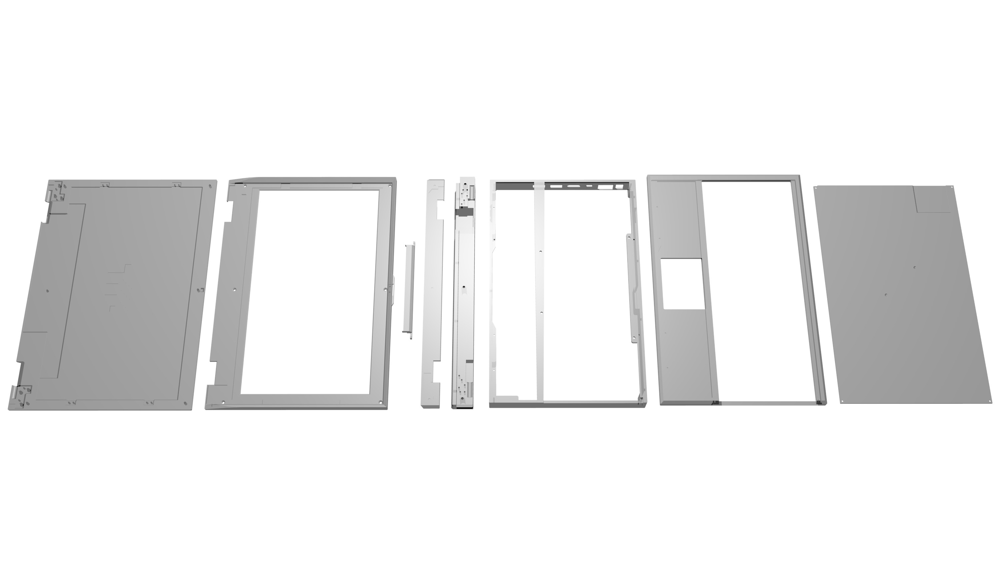

The Case¶
Reform has 8 case parts.
Screen Back¶
The display is mounted on the screen back with screws. Also, the left and right hinges are screwed in the bottom left and right corners.
Screen Front¶
This part serves as a bezel for the display and holds the case closing strap. It also has a magnet attached to it on the lower left that is sensed by the lid sensor.
Screen Support¶
The screen support connects the main box to the screen via the hinges. The display’s LVDS (motherboard header J14) and power cable (motherboard header J26) is passed through this part, as well as the lid sensor cable (J34).
Screen Support Closure¶
This is a thin part covering the screen support’s top. On the left, it contains a pocket for the hall effect sensor that detects the magnet on the screen front. The sensor signals opening and closing of the lid.
Main Box¶
The main box contains most of the electronics:
- Reform Motherboard, exposing ports through holes on the left
- Power switch/cable assembly, connecting to motherboard header J22
- LiFePo4 battery, connecting to header J33
- Reform Keyboard, connecting to header J12 (internal USB)
- Reform Trackball, connecting to header J9 (internal USB)
Grid Plate¶
This lasercut acrylic part is sandwiched between the main box’ inner top and the motherboard. It has the mounting holes for the motherboard and other internal devices and isolates the motherboard from the keyboard.
Main Box Top¶
The main box top is pressed onto the main box to close it from the top. It acts as a palm rest and bezel for the keyboard and trackball. The keyboard is slided into this part’s keyboard slot from the right.
Keyboard Closure¶
This part is inserted into the main box top after the keyboard to secure it in place.
Bottom Plate¶
The bottom plate closes the main box from the bottom. It contains mounting holes for the fan and vent holes for the fan’s air intake. The fan is connected to motherboard header J15 before screwing in the plate.